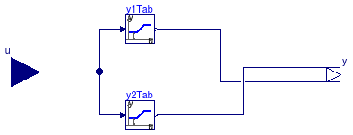
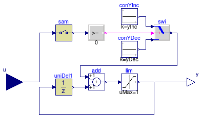
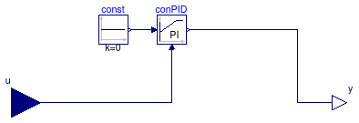

This package contains component models that are used to construct the control system in Buildings.Examples.ChillerPlant.
Extends from Modelica.Icons.VariantsPackage (Icon for package containing variants).
| Name | Description |
|---|---|
| ChillerSwitch | Control unit for enabling/disabling chiller |
| Output y=k-u | |
| A two-pieces linear piecewise function | |
| Count the number of actuators that have request | |
| Trim and respond logic | |
| Trim and respond logic | |
| Control unit for WSE | |
| Test of components |

TChi_CHWST > TChiSet + TDeaBan
TChi_CHWST ≤ TChiSet
Extends from Modelica.Blocks.Interfaces.BlockIcon (Basic graphical layout of input/output block).
| Type | Name | Default | Description |
|---|---|---|---|
| Temperature | deaBan | Dead band of temperature to prevent chiller short cycling [K] |
| Type | Name | Description |
|---|---|---|
| input RealInput | chiCHWST | Chiller chilled water supply temperature (water entering chiller) [K] |
| output BooleanOutput | y | Control signal for chiller. 1: Enable, 0: Disable |
| input RealInput | TSet | Set temperature of chiller [K] |
block ChillerSwitch "Control unit for enabling/disabling chiller" extends Modelica.Blocks.Interfaces.BlockIcon;Modelica.Blocks.Interfaces.RealInput chiCHWST( final quantity="Temperature", final unit="K", displayUnit="deg") "Chiller chilled water supply temperature (water entering chiller)"; Modelica.Blocks.Interfaces.BooleanOutput y "Control signal for chiller. 1: Enable, 0: Disable"; Modelica.Blocks.Interfaces.RealInput TSet( final quantity="Temperature", final unit="K", displayUnit="deg") "Set temperature of chiller"; parameter Modelica.SIunits.Temperature deaBan "Dead band of temperature to prevent chiller short cycling";Modelica.Blocks.Logical.Hysteresis hysteresis(uLow=0, uHigh=deaBan); Modelica.Blocks.Math.Add add(k1=+1, k2=-1); equationconnect(hysteresis.y, y); connect(chiCHWST, add.u1); connect(TSet, add.u2); connect(add.y, hysteresis.u); end ChillerSwitch;
 Buildings.Examples.ChillerPlant.BaseClasses.Controls.KMinusU
Buildings.Examples.ChillerPlant.BaseClasses.Controls.KMinusU

y = k - u.
Extends from Modelica.Blocks.Interfaces.BlockIcon (Basic graphical layout of input/output block).
| Type | Name | Default | Description |
|---|---|---|---|
| Real | k | Sum of u and y |
| Type | Name | Description |
|---|---|---|
| input RealInput | u | Input |
| output RealOutput | y | Output |
block KMinusU "Output y=k-u" extends Modelica.Blocks.Interfaces.BlockIcon; public parameter Real k "Sum of u and y";Modelica.Blocks.Interfaces.RealInput u "Input"; Modelica.Blocks.Interfaces.RealOutput y "Output"; equation y = k - u;end KMinusU;

This component calcuates the output according to two piecewise linear function as
| u ∈ [x0, x1]: | y1 = y10 + u (y11-y10)/(x1-x0) y2 = y20 |
| u ∈ (x1, x2]: | y1 = y11 y2 = y20 + (u-x1) (y21-y20)/(x2-x1) |
Extends from Modelica.Blocks.Interfaces.BlockIcon (Basic graphical layout of input/output block).
| Type | Name | Default | Description |
|---|---|---|---|
| Real | x0 | First interval [x0, x1] | |
| Real | x1 | First interval [x0, x1] and second interval (x1, x2] | |
| Real | x2 | Second interval (x1, x2] | |
| Real | y10 | y[1] at u = x0 | |
| Real | y11 | y[1] at u = x1 | |
| Real | y20 | y[2] at u = x1 | |
| Real | y21 | y[2] at u = x2 |
| Type | Name | Description |
|---|---|---|
| input RealInput | u | Set point |
| output RealOutput | y[2] | Connectors of Real output signal |
block LinearPiecewiseTwo "A two-pieces linear piecewise function" extends Modelica.Blocks.Interfaces.BlockIcon; parameter Real x0 "First interval [x0, x1]"; parameter Real x1 "First interval [x0, x1] and second interval (x1, x2]"; parameter Real x2 "Second interval (x1, x2]"; parameter Real y10 "y[1] at u = x0"; parameter Real y11 "y[1] at u = x1"; parameter Real y20 "y[2] at u = x1"; parameter Real y21 "y[2] at u = x2";Modelica.Blocks.Interfaces.RealInput u "Set point"; Modelica.Blocks.Interfaces.RealOutput y[2] "Connectors of Real output signal"; Buildings.Controls.SetPoints.Table y1Tab(table=[x0, y10; x1, y11; x2, y11]) "Tabel for y[1]"; Buildings.Controls.SetPoints.Table y2Tab(table=[x0, y20; x1, y20; x2, y21]) "Tabel for y[2]"; equationconnect(u, y1Tab.u); connect(u, y2Tab.u); connect(y1Tab.y, y[1]); connect(y2Tab.y, y[2]); end LinearPiecewiseTwo;
 Buildings.Examples.ChillerPlant.BaseClasses.Controls.RequestCounter
Buildings.Examples.ChillerPlant.BaseClasses.Controls.RequestCounter

uAct[i] is larger than uTri.
Extends from Modelica.Blocks.Interfaces.BlockIcon (Basic graphical layout of input/output block).
| Type | Name | Default | Description |
|---|---|---|---|
| Integer | nAct | Number of actuators | |
| Real | uTri | Value to trigger a request from actuator |
| Type | Name | Description |
|---|---|---|
| output IntegerOutput | nInc | Number of actuators requesting control signal increase |
| input RealInput | uAct[nAct] | Input signal from actuators |
block RequestCounter "Count the number of actuators that have request" extends Modelica.Blocks.Interfaces.BlockIcon; parameter Integer nAct "Number of actuators"; parameter Real uTri "Value to trigger a request from actuator";Modelica.Blocks.Interfaces.IntegerOutput nInc "Number of actuators requesting control signal increase"; Modelica.Blocks.Interfaces.RealInput uAct[nAct] "Input signal from actuators"; algorithm nInc := 0; for i in 1:nAct loop if uAct[i] > uTri then nInc := nInc + 1; end if; end for;end RequestCounter;
 Buildings.Examples.ChillerPlant.BaseClasses.Controls.TrimAndRespond
Buildings.Examples.ChillerPlant.BaseClasses.Controls.TrimAndRespond
This model implements the trim and respond logic. The model samples the outputs of actuators every tSam.
The control sequence is as follows:
u ≥ 0, then y = y + nActInc,u < 0, then y = y - yDec.Extends from Modelica.Blocks.Interfaces.DiscreteSISO (Single Input Single Output discrete control block).
| Type | Name | Default | Description |
|---|---|---|---|
| Time | samplePeriod | Sample period of component [s] | |
| Time | startTime | 0 | First sample time instant [s] |
| Real | uTri | Value to triggering the request for actuator | |
| Real | yEqu0 | y setpoint when equipment starts | |
| Real | yDec | y decrement (must be negative) | |
| Real | yInc | y increment (must be positive) |
| Type | Name | Description |
|---|---|---|
| input RealInput | u | Continuous input signal |
| output RealOutput | y | Continuous output signal |
block TrimAndRespond "Trim and respond logic" extends Modelica.Blocks.Interfaces.DiscreteSISO; parameter Real uTri "Value to triggering the request for actuator"; parameter Real yEqu0 "y setpoint when equipment starts"; parameter Real yDec(max=0) "y decrement (must be negative)"; parameter Real yInc(min=0) "y increment (must be positive)";Modelica.Blocks.Logical.GreaterEqualThreshold incY(threshold=0) "Outputs true if y needs to be increased"; Modelica.Blocks.Logical.Switch swi; Modelica.Blocks.Discrete.Sampler sam(samplePeriod=samplePeriod) "Sampler"; Modelica.Blocks.Sources.Constant conYDec(k=yDec) "y decrease"; Modelica.Blocks.Sources.Constant conYInc(k=yInc) "y increase"; Modelica.Blocks.Discrete.UnitDelay uniDel1( y_start=yEqu0, samplePeriod=samplePeriod, startTime=samplePeriod); Modelica.Blocks.Math.Add add; Modelica.Blocks.Nonlinear.Limiter lim(uMax=1, uMin=0) "State limiter"; equationconnect(lim.y, y); connect(add.y, lim.u); connect(uniDel1.y, add.u2); connect(incY.y, swi.u2); connect(sam.y, incY.u); connect(lim.y, uniDel1.u); connect(swi.y, add.u1); connect(swi.u3, conYDec.y); connect(conYInc.y, swi.u1); connect(sam.u, u); end TrimAndRespond;

This model implements a continuous time approximation to the trim and respond control algorithm.
Extends from Modelica.Blocks.Interfaces.SISO (Single Input Single Output continuous control block).
| Type | Name | Description |
|---|---|---|
| input RealInput | u | Connector of Real input signal |
| output RealOutput | y | Connector of Real output signal |
block TrimAndRespondContinuousTimeApproximation "Trim and respond logic" import Buildings; extends Modelica.Blocks.Interfaces.SISO;Buildings.Controls.Continuous.LimPID conPID( Td=1, yMax=1, yMin=0, reverseAction=true, controllerType=Modelica.Blocks.Types.SimpleController.PI, Ti=120, k=0.1); Modelica.Blocks.Sources.Constant const(k=0); equationconnect(const.y, conPID.u_s); connect(conPID.y, y); connect(u, conPID.u_m); end TrimAndRespondContinuousTimeApproximation;
 Buildings.Examples.ChillerPlant.BaseClasses.Controls.WSEControl
Buildings.Examples.ChillerPlant.BaseClasses.Controls.WSEControl
This component decides if the WSE is set to on or off. The WSE is enabled when
The WSE is disabled when
| Type | Name | Default | Description |
|---|---|---|---|
| TemperatureDifference | dTOff | 1 | Temperature difference to switch WSE off [K] |
| TemperatureDifference | dTW | 1 | Temperature difference that is added to WSE on guard [K] |
| Type | Name | Description |
|---|---|---|
| input RealInput | wseCHWST | WSE chilled water supply temperature (water entering WSE) [K] |
| output RealOutput | y2 | Control signal for chiller shutoff valve |
| input RealInput | TWetBul | Wet bulb temperature [K] |
| input RealInput | towTApp | Cooling tower approach [K] |
| input RealInput | wseCWST | WSE condenser water supply temperature (water entering WSE) [K] |
| output RealOutput | y1 | Control signal for WSE shutoff valve |
model WSEControl "Control unit for WSE"
parameter Modelica.SIunits.TemperatureDifference dTOff = 1
"Temperature difference to switch WSE off";
parameter Modelica.SIunits.TemperatureDifference dTW = 1
"Temperature difference that is added to WSE on guard";
Modelica.Blocks.Interfaces.RealInput wseCHWST(
final quantity="Temperature",
final unit="K",
displayUnit="deg")
"WSE chilled water supply temperature (water entering WSE)";
Modelica.Blocks.Interfaces.RealOutput y2
"Control signal for chiller shutoff valve";
Modelica.Blocks.Interfaces.RealInput TWetBul(
final quantity="Temperature",
final unit="K",
displayUnit="deg") "Wet bulb temperature";
Modelica.Blocks.Interfaces.RealInput towTApp(
final quantity="Temperature",
final unit="K",
displayUnit="deg") "Cooling tower approach";
Modelica.Blocks.Interfaces.RealInput wseCWST(
final quantity="Temperature",
final unit="K",
displayUnit="deg")
"WSE condenser water supply temperature (water entering WSE)";
Modelica.Blocks.Math.BooleanToReal booToRea2;
Modelica.Blocks.Interfaces.RealOutput y1
"Control signal for WSE shutoff valve";
Modelica_StateGraph2.Step off(
use_activePort=true,
nOut=1,
nIn=1,
final initialStep=true);
Modelica_StateGraph2.Transition T1(delayedTransition=true, waitTime=1200,
use_conditionPort=false,
condition=wseCHWST > 0.9*TWetBul + towTApp + dTW);
Modelica_StateGraph2.Step on(nIn=1, nOut=1,
final initialStep=false);
Modelica_StateGraph2.Transition T2(delayedTransition=true, waitTime=1200,
use_conditionPort=false,
condition=wseCHWST < wseCWST + dTOff);
Modelica.Blocks.Math.BooleanToReal booToRea1(realTrue=0, realFalse=1);
equation
connect(booToRea2.y, y2);
connect(off.outPort[1], T1.inPort);
connect(T1.outPort, on.inPort[1]);
connect(on.outPort[1], T2.inPort);
connect(T2.outPort, off.inPort[1]);
connect(off.activePort, booToRea2.u);
connect(booToRea1.y, y1);
connect(booToRea1.u, off.activePort);
end WSEControl;